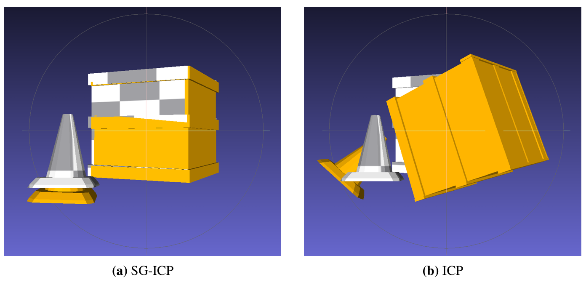
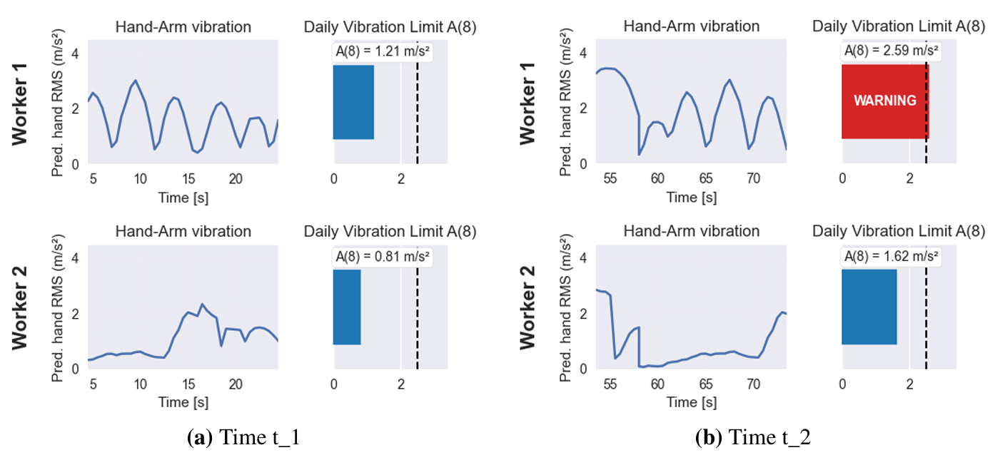
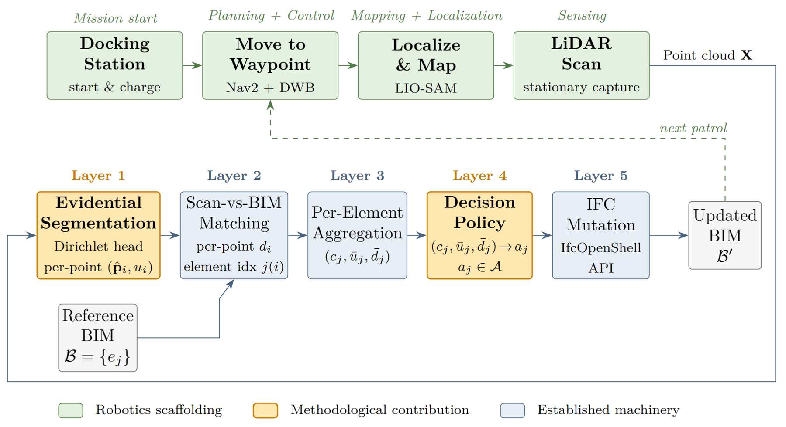
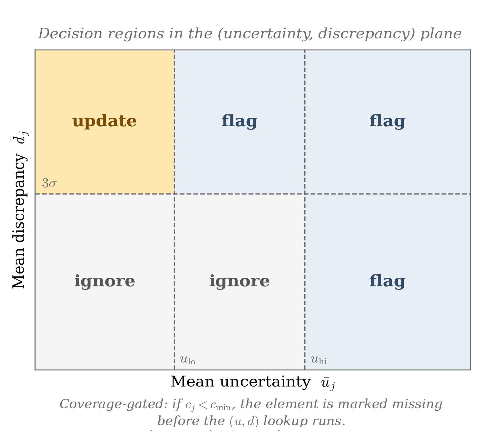
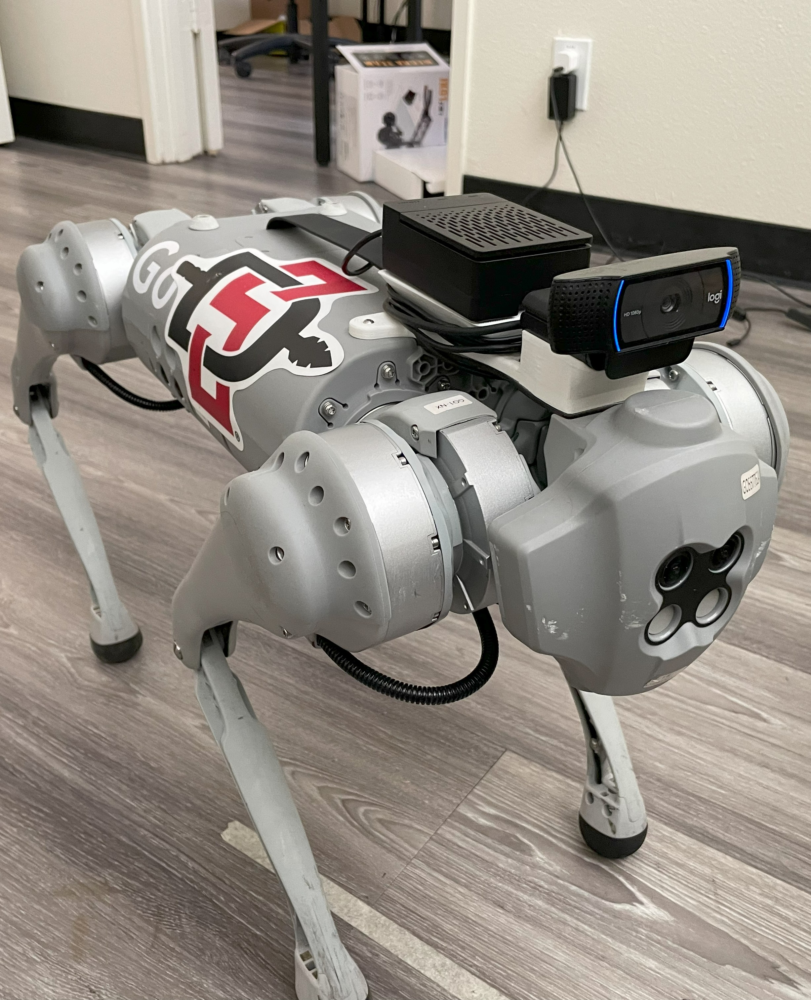
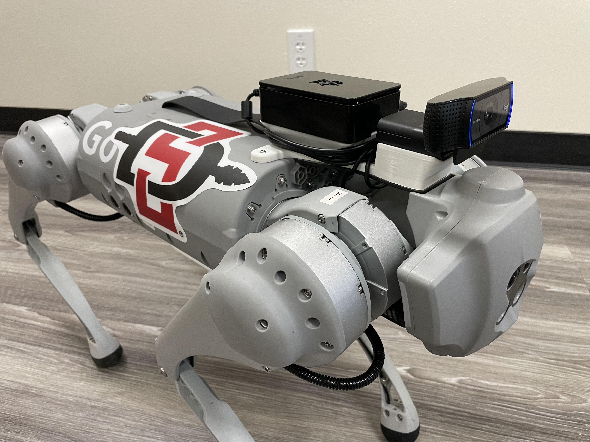

BIM2RDT — Agentic Digital Twins
An agentic AI safety-first framework for robot-ready site digital twins.
The problem
Building information models are created once, then drift out of date the moment construction begins. Robots operating on a site need a current, semantically rich model to navigate, inspect, and monitor safety — but keeping a BIM synchronized with the physical world is an unsolved problem.
What I built
BIM2RDT is an agentic AI framework that fuses a static BIM with live LiDAR and IMU sensor data to produce safety-aware, robot-ready site digital twins. I co-authored the framework and contributed to its agentic pipeline, which grounds LLM-driven robot task planning in up-to-date geometric and semantic site context — supporting autonomous inspection, navigation, and construction-safety monitoring.

Architecture
The framework processes the as-designed BIM and live sensor streams through a multi-stage agentic pipeline. Its headline contribution is Semantic-Gravity ICP — a registration algorithm that uses LLM-derived gravity priors to constrain how robot-acquired scans align with the reference model.


Highlights
- Fuses BIM with live LiDAR/IMU data into robot-ready site digital twins.
- Semantic-Gravity ICP uses LLM-derived gravity priors to constrain scan-to-BIM registration.
- Writes IoT sensor events into the IFC model via IfcTask and IfcEvent entities.
- Supports autonomous inspection, navigation, and construction-safety monitoring.

Uncertainty-Aware Scan-to-BIM via Evidential Deep Learning
BIM2RDT demonstrates perception and event injection but explicitly leaves the geometric update closure — deciding when a detected discrepancy should actually edit the BIM — as future work. My CONE 652 research proposal closes exactly that gap.
It inserts a calibrated uncertainty layer between point-cloud semantic segmentation and IFC editing: a segmentation network with an evidential deep learning head produces per-point uncertainty in a single forward pass, and a decision policy maps uncertainty and scan-vs-BIM discrepancy onto an action set — autonomous update, human review, mark-missing, or ignore — committing autonomous edits only when perception and geometry agree.


Tech stack
Agentic AI / multi-agent LLMs · BIM and IFC (IfcOpenShell) · LiDAR and IMU sensor fusion · point-cloud semantic segmentation · evidential deep learning · PyTorch.
Gallery
Related robotics work from the DiCE Lab — the Unitree Go1 quadruped sensor platform from the lab's i3ce control-framework project.

